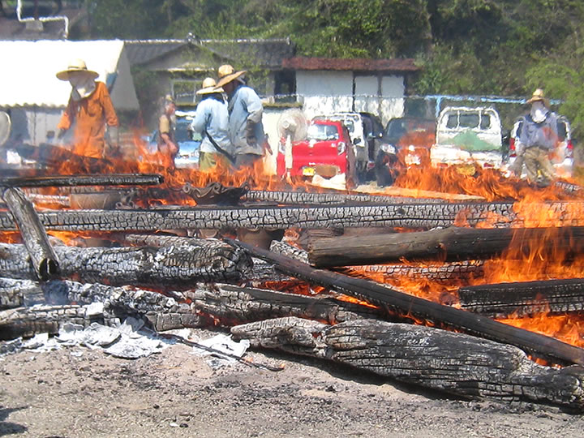
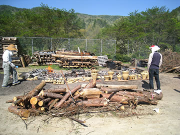
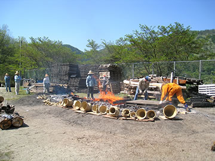
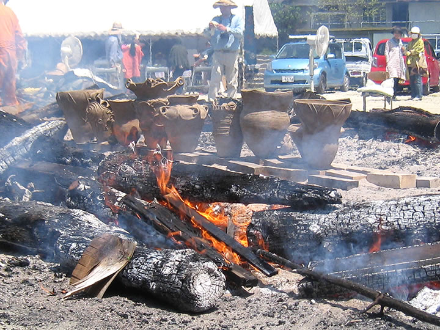
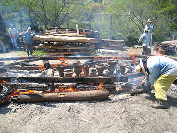
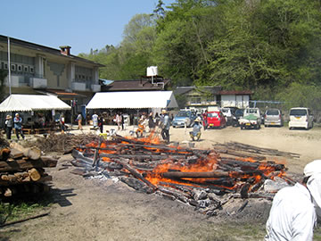
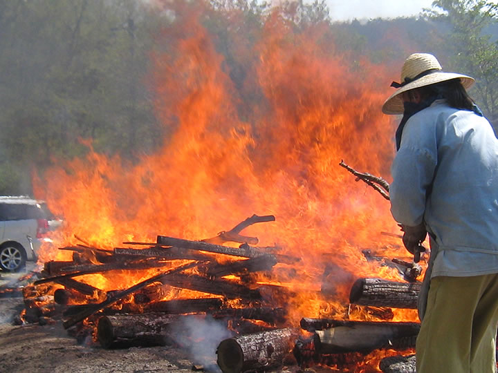
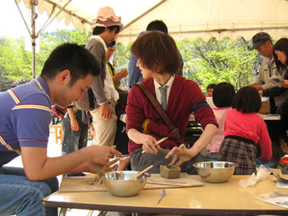
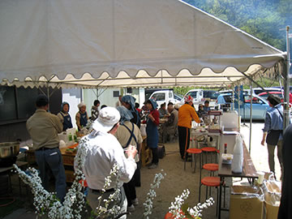
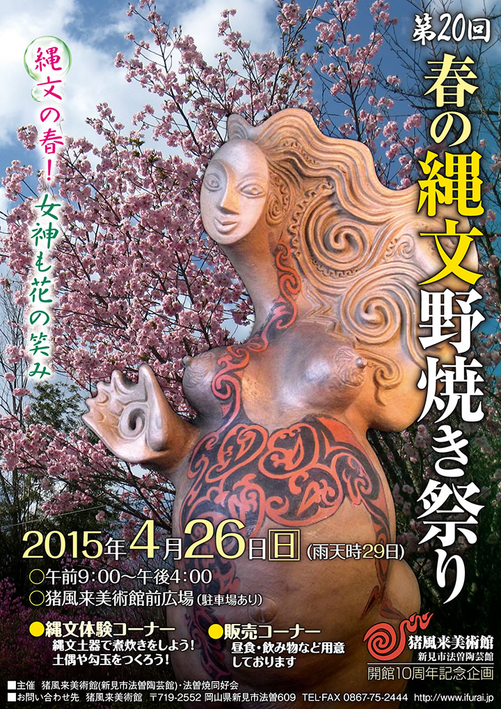

― これまでのイベント（記録） ―
|  |
| （画像をクリックで拡大します） |
開館10周年記念企画「第２０回春の縄文野焼き祭り」が開催されました。
春――うららかな野焼き晴れの一日！
縄文の火が燃え、太陽が燃え、人々の熱気が燃える！
今年は猪風来美術館（新見市法曽陶芸館）開館10周年にあたります。
猪風来美術館は開館以来、縄文スピリットにもとづく陶芸教室と縄文野焼き祭りを館の主要な活動として展開してきました。
自然と共生し、生と死と再生への畏怖と祈りの世界観が表現された縄文の造形は、時代を切り拓く根源力をもつと世界から注目を集めています。
|  |  |

|

|
| （画像をクリックで拡大します） | |
４月２６日当日はよく晴れ上がり、またとない野焼き日和になりました。
とにかく暑い、熱い、しかし爽やかな一日。
大地も太陽も風もみな野焼きにとってベストコンディションです。
火入れは少し涼やかな午前７時、もうあたりが十分に明るくなって野鳥の声も晴れやかです。
間もなく遠方からの援軍も到着、８時には野焼きスタッフもそろい火が安定したところで作品の炙り焼き開始。
|  | |
|  |

|
| （画像をクリックで拡大します） | |
今回焼き上げるのは、広島県福山市馬取貝塚出土の縄文土器を復元制作した土器をはじめ、縄文文様を独自に駆使した創作縄文土器や、陶芸教室生の可愛らしい土偶鈴や土面・オブジェなど約80点。
どの作品も縄文の心とスピリットに満ちみちています。
太陽が燃え、野焼きの炎も燃えあがり、人々の熱気も更に燃えあがって、野焼きスタッフも汗にまみれながら大奮闘！
野炉の温度は順調に上昇し、昼過ぎには攻め焚き、そして最後の大焚きで作品を包み込む赤い炎が空高く舞い上がり最高潮に達します。
|  |

|
|  | |
| （画像をクリックで拡大します） | |
火の子宮から生まれ出たばかりの、新しい命を宿した縄文の作品たち。
みな火の力をまといパワフルさを増しています。
県内はもちろん遠くは東京・仙台・大阪・香川・広島など参加者が各地から駆けつけ、のべ150人ほどが縄文野焼きの炎の熱に触れ、縄文体験の一日を堪能しました。

|

|

|

|
| （画像をクリックで拡大します） | |
=∴=∵=∴=∵=∴=∵=∴=∵=∴=∵=∴=∵=∴=∵=∴=∵=∴=∵=∴=∵=∴=∵=∴=∵=∴=∵=∴=
縄文体験コーナー大賑わい！
《縄文体験コーナー》
～縄文土器で煮炊き～
土器女子たちが縄文の煮炊き体験！
福山市のＭさん、井原市のＫさん、岡山市のＯさんの３人が中心となり心をこめて作ってくれました。
今回は山の恵み「猪汁」。
いつもどおり糊状のでんぷんを内側に丹念に塗っておいたふたつの土器を、小さな焚火にすえて薪をくべます。
土器が十分に温まったら水を入れて、沸いてきたら野菜と猪肉と味噌を入れておいしい汁物の出来上がり！

|
| （画像をクリックで拡大します） |
～粘土でつくろう～
土に触ると楽しい気分！
小さい子から大人まで粘土に夢中。
恐竜や愛らしい母子土偶、模様のついた小さな器や生きものたち、自分だけの不思議なオブジェなど……どれも楽しい感じが伝わってきます。
この日は準備した粘土が足りなくなるほどの盛況でした。
作品は野焼きして仕上げます。作品を受け取りに来られる方は焼き上がっているか電話でご確認お願い致します。
～石で勾玉をつくろう～
黒・白・ピンクの石でつくる勾玉はいのちの根源のカタチ。
やわらかな滑石を紙やすりなどでこすって丸く削っていきます。
ひたすらこすって削りゴシゴシ……ゴシゴシ……丹念に磨きあげた勾玉のペンダントが胸に揺れます。
|  |

|
| （画像をクリックで拡大します） | |
=∴=∵=∴=∵=∴=∵=∴=∵=∴=∵=∴=∵=∴=∵=∴=∵=∴=∵=∴=∵=∴=∵=∴=∵=∴=∵=∴=
《販売コーナー》
朝早くから地元法曽焼同好会の会員のみなさんによって準備が進みます。
昼食には手打うどん・猪カレーうどん・猪カレーライスなどが提供され大好評でした。
暑さのため冷たい飲み物やノンアルコールビールがよく売れていました。
地元特産品法曽茶・法曽焼の販売もありました。
今回はポップコーンが初登場。同好会会員Ｙくんが機械を持ちこみ、作りながらの販売でこちらも大好評！

|
 |
| （画像をクリックで拡大します） | |
=∴=∵=∴=∵=∴=∵=∴=∵=∴=∵=∴=∵=∴=∵=∴=∵=∴=∵=∴=∵=∴=∵=∴=∵=∴=∵=∴=
|  |

|
| 【「第20回 春の縄文野焼き祭り」チラシ】 →（表面）PDF版を開く →（裏面）PDF版を開く |